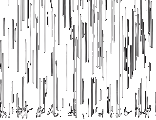
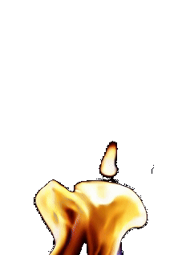
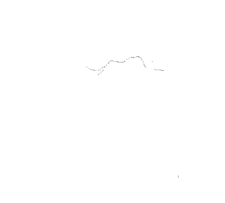
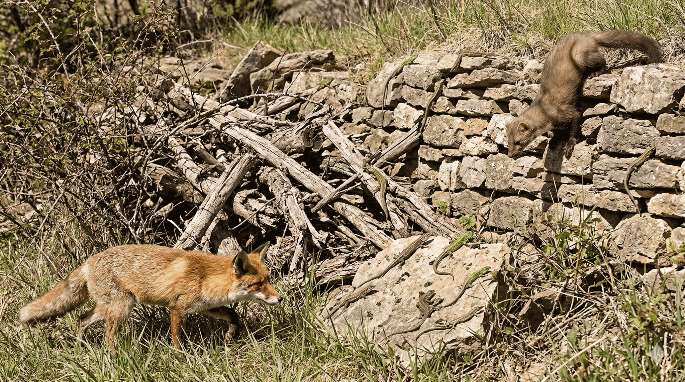
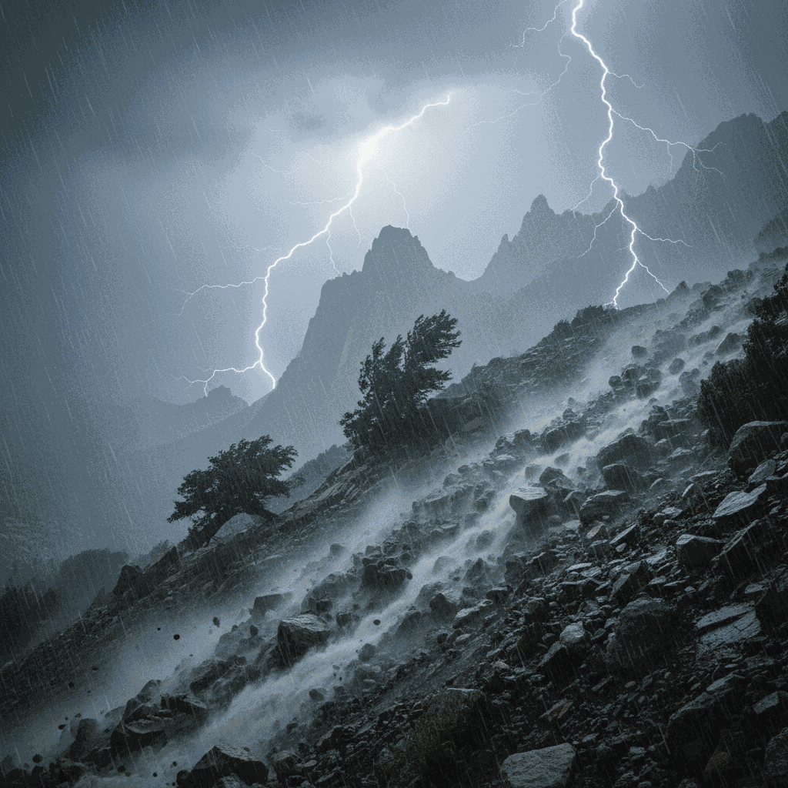
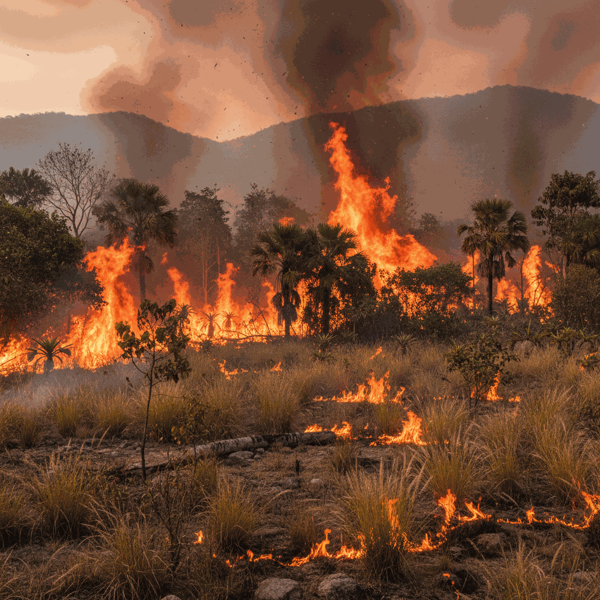
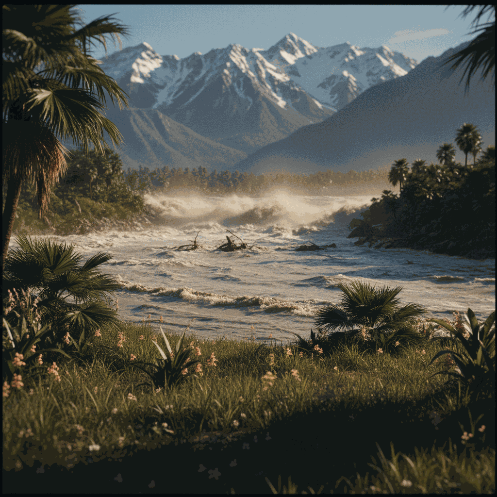

Exportergebnis
Das Ergebnis wird unterhalb der Simulation angezeigt. Du kannst nach unten scrollen und das Bild bei Bedarf kopieren oder sichern.



Das Ergebnis wird unterhalb der Simulation angezeigt. Du kannst nach unten scrollen und das Bild bei Bedarf kopieren oder sichern.



